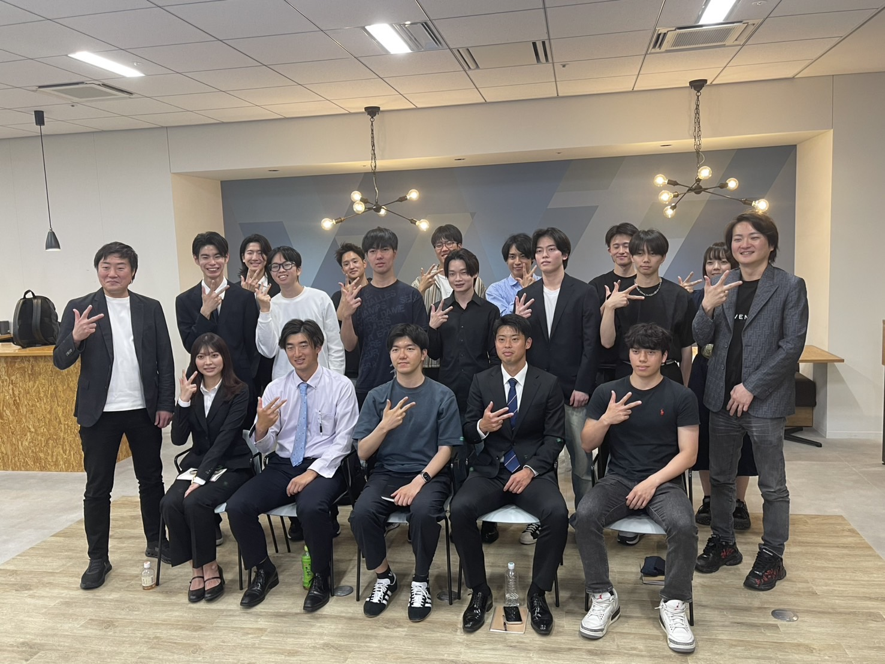

協賛・スポンサー
SIB主催の学生向けイベントやピッチコンテストに協賛企業として参加いただけます。
- 学生に自社を知ってもらいたい
- 採用候補層との接点をつくりたい
- 地域や若者支援に関わりたい

SIBは、学生に挑戦や出会いのきっかけを届けることを目的に活動する学生団体です。学生同士のつながりだけでなく、企業や地域の方々と関わることで、リアルな学びや将来につながる経験を生み出しています。
企業に対しては、学生との接点づくり、若者目線の広報・発信、イベントやワークショップの共催、採用候補層との関係形成などを通じて、企業の課題解決や未来づくりをサポートします。
登壇、交流、ワークショップ、集合写真。実際の活動風景を通じて、SIBのリアルな雰囲気と、学生と企業が近い距離で関われる場の価値を伝えます。



採用候補との出会い、若者向け認知の拡大、学生目線の広報、地域での存在感づくりまで。SIBを中心に、企業が得られる価値をひと目で把握できるように整理しました。
SIBでは、イベント協賛からSNS運用、学生との交流、経営者コミュニティまで、企業の目的や課題に合わせた複数の関わり方をご用意しています。
SIB主催の学生向けイベントやピッチコンテストに協賛企業として参加いただけます。
学生目線を活かしたInstagram、TikTok、ショート動画、投稿デザインなどを通じて発信します。
SIBの学生ネットワークや企画力を活かし、学生向けイベントやサービスの集客、告知を支援します。
SIBに関わる学生やイベント参加学生との接点を通じて、自然な出会いをサポートします。
SIBが運営する経営者コミュニティを通じて、経営者同士、学生、地域企業が継続的につながる場をつくります。
企業の事業内容や課題をテーマに、学生と一緒に考えるイベントやワークショップを企画します。
企業の目的やフェーズに合わせて、まずは小さな協賛から、継続的なコミュニティ参加、SNS運用、採用広報、イベント共催まで柔軟に設計できます。
学生向けイベントに協賛企業として参加し、自社PRや学生との接点づくりを行えます。
企業の事業内容や実際の課題をテーマに、学生と一緒に考える場をつくります。
学生が見たくなる投稿やショート動画を企画し、企業の認知拡大や採用広報につなげます。
イベントやコミュニティを通じて、企業に関心を持つ学生との関係を作ります。
経営者同士のつながりを広げながら、SIBの学生とも継続的に関われます。
地域課題、採用広報、学生向けサービス、イベント企画などをテーマに共同で実行できます。
まずは企業様の目的や課題をお伺いし、SIBとしてどのような関わり方ができるかをご提案します。
まずは公式LINEまたはフォームより、お気軽にご相談ください。
採用、広報、集客、学生接点、地域連携など、目的や課題を整理します。
協賛、SNS運用、イベント共催、学生接点などから目的に合った形をご提案します。
実施内容、スケジュール、費用、役割分担などをすり合わせます。
SIBメンバーが企画・運営・発信をサポートし、振り返りまで行います。
協賛、イベント共催、SNS運用、採用広報、学生接点、経営者コミュニティなど、企業様の目的に合わせた関わり方をご提案します。まずはお気軽にご相談ください。